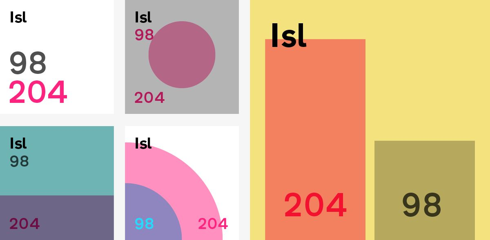

Data can be hard to grasp however visualising it can make comprehension faster. Sparklines (tiny charts in text, like this: 123{10,20,30,40,50,60,70,80,90,100}789) are a useful tool, but creating them for the web has always required code and using them in word documents was previously impossible.
Sparks, now in its second release, is a family of 15 fonts (three variants in five weights each) that allows for the easy combination of text and visual data by removing the need for any technical know-how. By installing the Spark font you can use them immediately without the need for custom code.
A D3 module to support the creation of London Squared cartograms.

Examples
Developing
For local development you can use these npm scriptsnpm run build
uses webpack to compile the code in the src directory outputting to the _dist_ directory.npm run serve
runs browser-sync on the site directory.